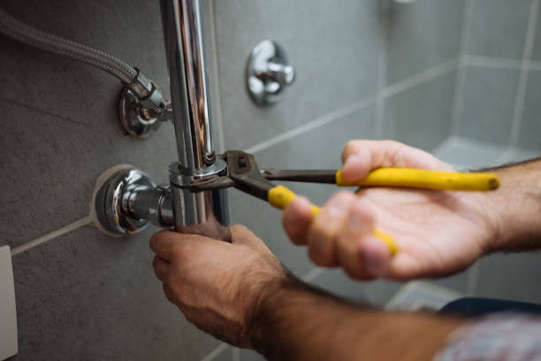

Qualities That Make a Plumbing Contractor Best-Rated in Fricial
Posted by on 2024-06-07
The quest for a best-rated plumbing contractor in the fictive town of Fricial is akin to finding a trustworthy guardian for one's home's vital systems. Plumbing, an essential aspect of any household or commercial building, requires skilled hands and sharp minds to maintain and repair. In Fricial, as in any community, certain qualities elevate a plumbing contractor above the rest, earning them the coveted title of 'best-rated'. This essay will explore these characteristics that make a plumbing contractor not just competent, but exceptional.
Firstly, expertise and knowledge are the bedrock upon which a top-rated plumber stands. A contractor who has undergone extensive training and possesses certifications demonstrates commitment to their craft. They keep abreast of the latest industry standards, technologies, and methods. Such contractors can handle diverse challenges—from leaky faucets to complex piping installations—with ease and efficiency.
Secondly, experience plays a pivotal role. A well-seasoned plumber brings time-tested skills to the table. They have seen a multitude of scenarios unfold in homes across Fricial and solved problems that vary widely in complexity. Their practical know-how equips them with foresight; they can anticipate issues before they snowball into disasters.
Communication is another hallmark of excellence for plumbers in Fricial. The ability to listen attentively to clients' concerns allows them to diagnose problems accurately and provide clear explanations about what needs fixing. This transparency extends to discussing costs upfront—a trait much appreciated by homeowners wary of hidden fees or unnecessary services.
Professionalism must be woven into every interaction with clients—punctuality signifies respect for clients' time while tidiness shows regard for their property. An outstanding plumbing contractor wears professionalism like a badge of honor; from the cleanliness of their uniform to the meticulous care they take in completing tasks without leaving behind a mess.
Emergency responsiveness is crucial because plumbing crises do not clock out after business hours. The best-rated contractors understand this and offer round-the-clock availability for those midnight bursts or early morning overflows that threaten properties with water damage.
A robust warranty on work performed instills confidence in customers that their investment is protected should anything go awry post-service—a feature indicative of highly reputed contractors in Fricial who stand behind their workmanship wholeheartedly.
Community reputation cannot be bought—it must be earned through consistent hard work and positive interactions over time. A stellar plumbing contractor enjoys glowing testimonials from satisfied customers; word-of-mouth recommendations are worth their weight in gold within local circles where trustworthiness matters immensely.
Finally yet importantly comes innovation—the willingness to adopt eco-friendly practices or invest in tools that lead to more precise detections and repairs demonstrate forward-thinking leadership among peers within the industry.
In conclusion, while there may not be an exhaustive checklist defining what makes a plumbing contractor truly 'the best', it is clear that certain attributes are non-negotiable: profound knowledge complemented by rich experience; impeccable communication coupled with unwavering professionalism; readiness for emergencies backed by solid warranties; an untarnished community reputation fostered through innovative approaches—all contribute towards setting apart top-tier service providers from average performers within the charming confines of Fricial.